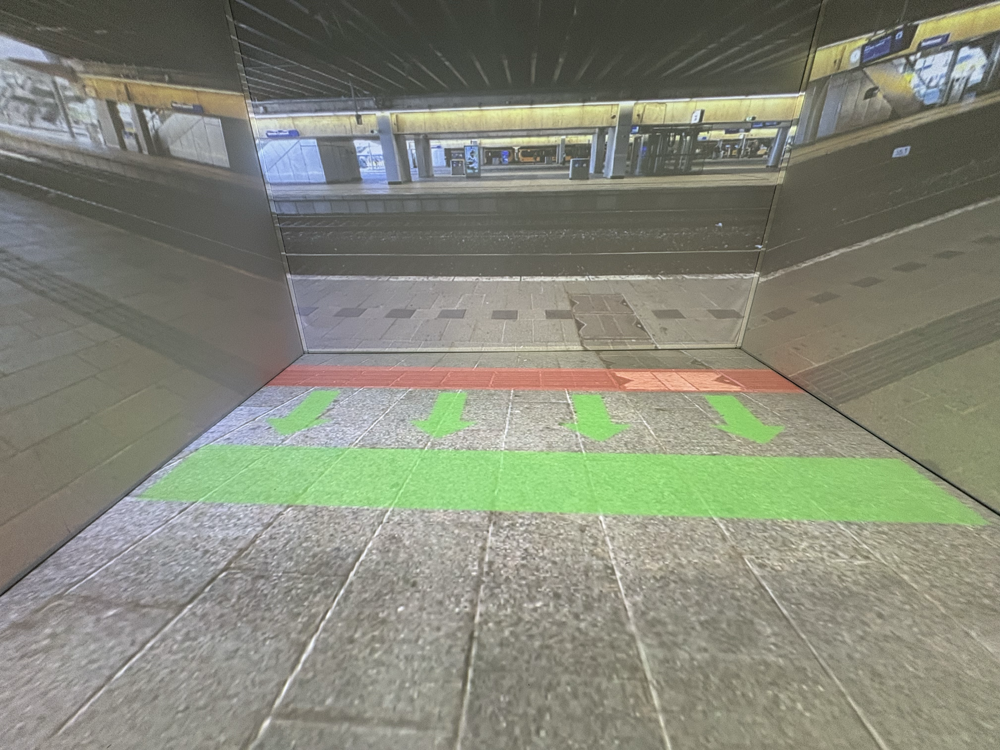
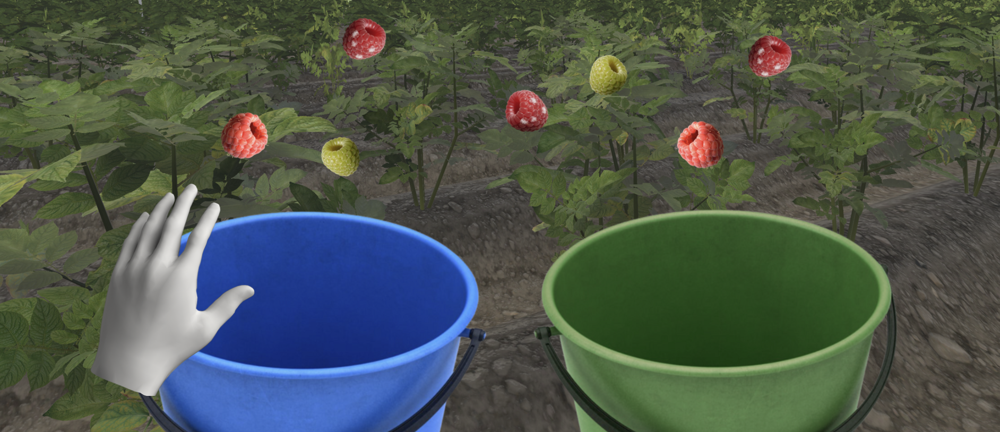
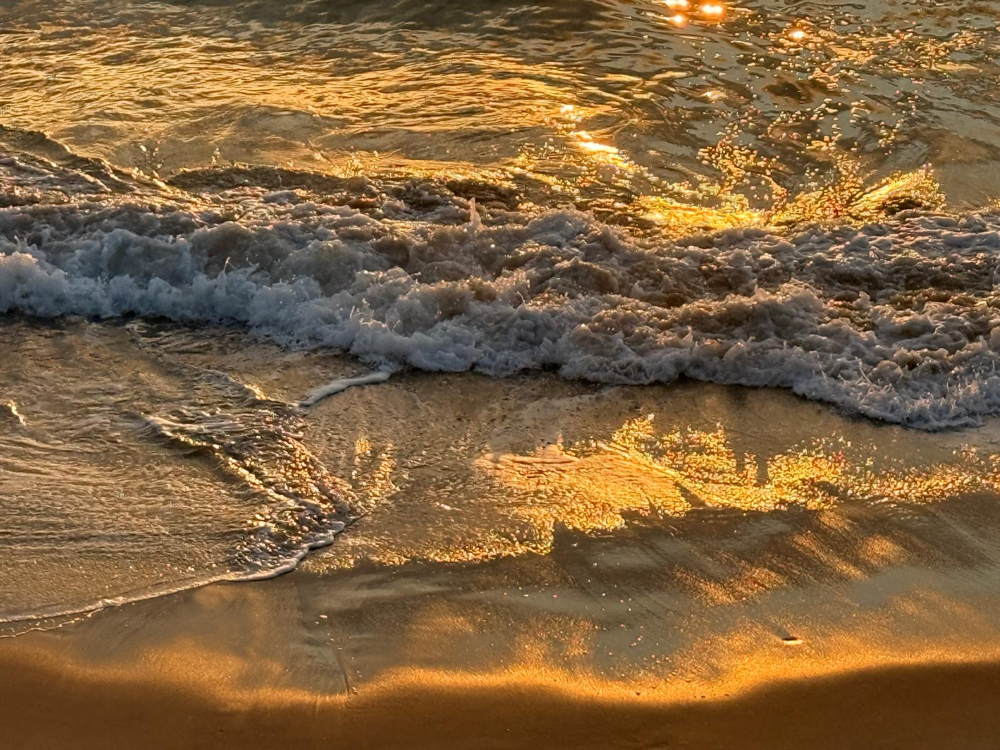
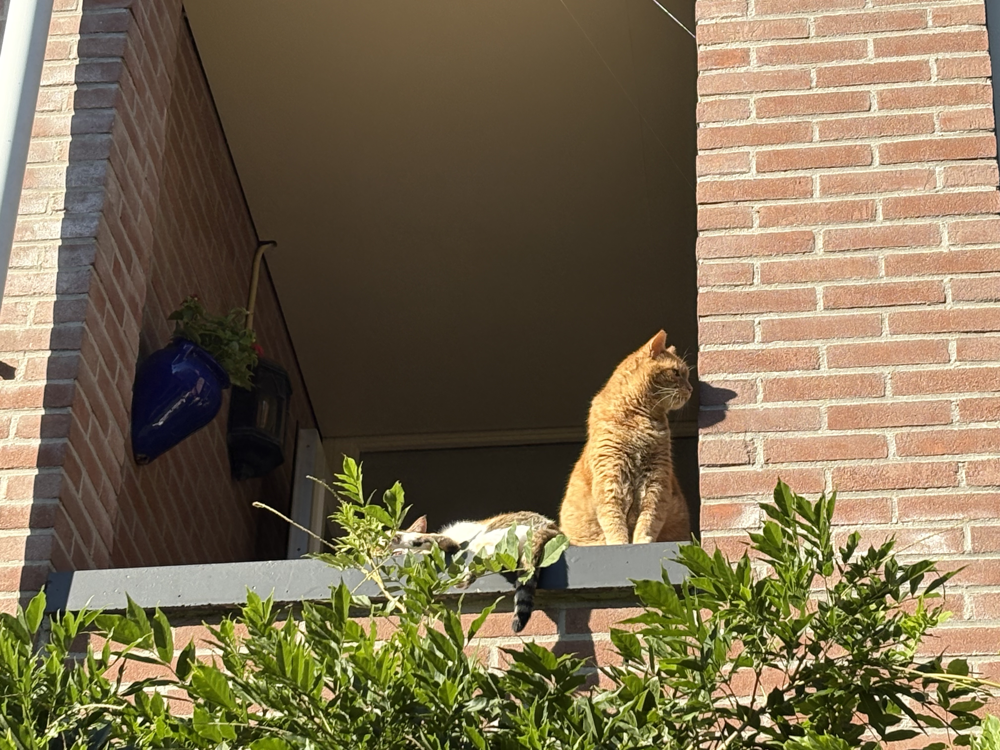
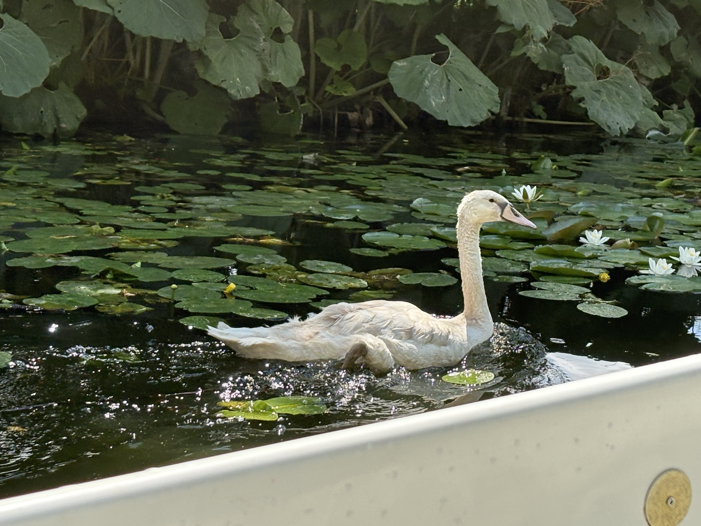

Sturing van reizigers
Een concept waarin projecties worden gebruikt om reizigers van de geleidelijnen te laten stappen voor visueel beperkte reizigers.
Case study
Een concept waarin projecties worden gebruikt om reizigers van de geleidelijnen te laten stappen voor visueel beperkte reizigers.
Case study
Een meertalige, laaggeletterde trainingsmodule voor seizoensplukkers.
Case study
Bullseye is een VR schietspel waarin 6 targets op je af komen rennen of op je schieten die jij vervolgens eerst neer moet schieten.
Case studyBlabla






VR Owl - Stage Sept. 2025 - jan. 2026
Koninklijke Visio - Stage Feb. 2024 - apr. 2024
Hogeschool van Amsterdam 2022-2026
Het vrijhouden van de geleidelijnen op treinstations voor blinde en slechtziende reizigers
Case studyEen meertalige, laaggeletterde trainingsmodule voor seizoensplukkers.
Case study
#s
Case study